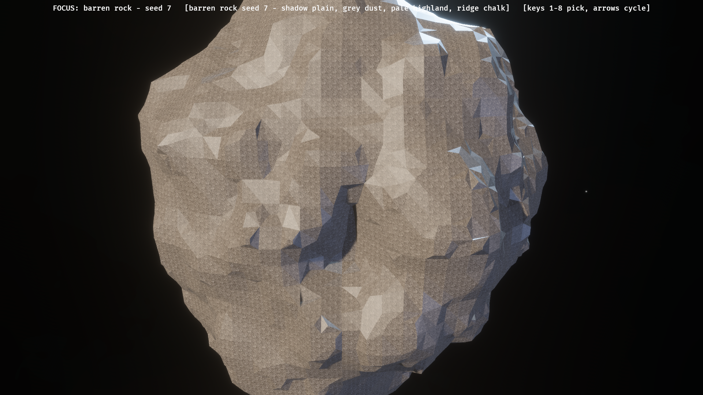
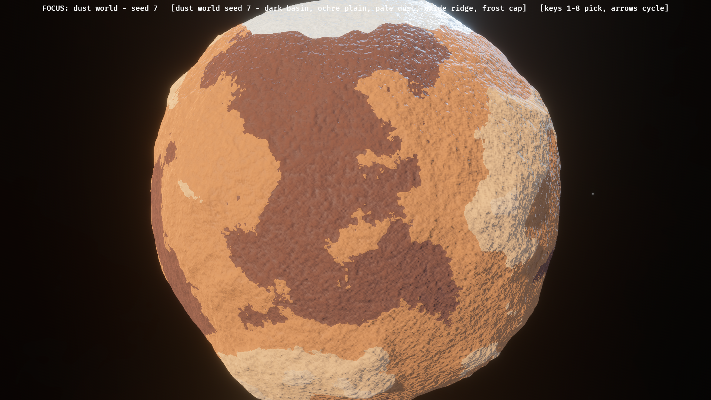
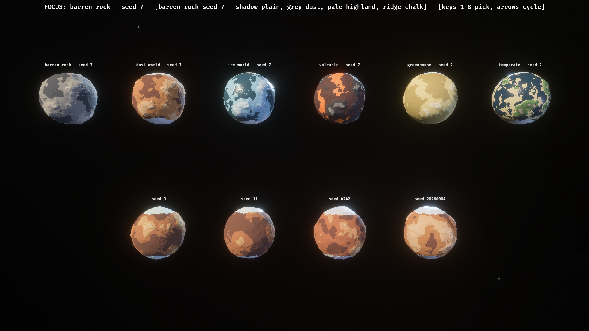
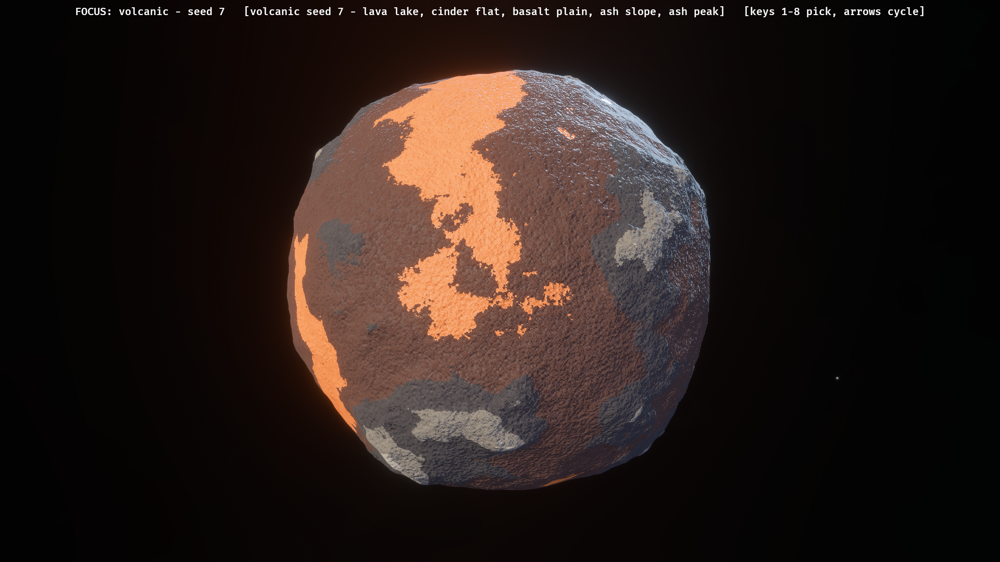
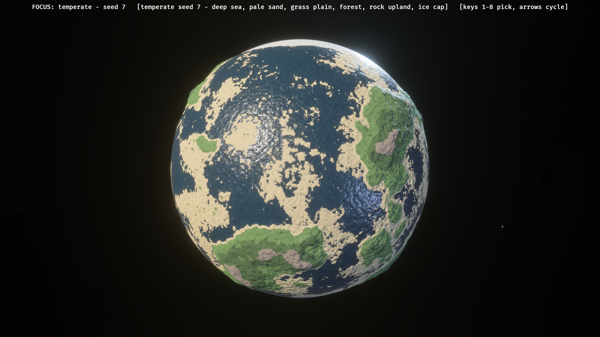
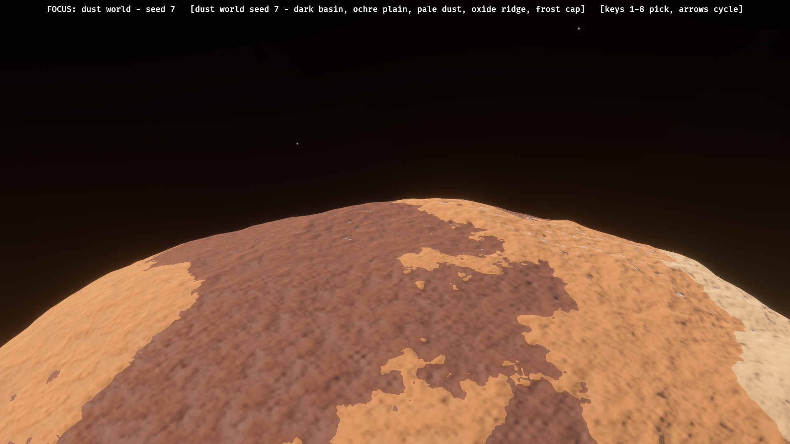

<title>Planetoid Look</title>
<style>
  :root {
    --bg: #fafaf8; --fg: #1a1a1a; --muted: #6b6b66; --line: #e4e4de;
    --accent: #2f6f4f; --chip: #eef2ee; --panel: #f3f4ef;
    --bug: #a8352c; --bug-bg: #f6eae8;
    --warn: #8a5f14; --warn-bg: #f4eedd;
    --gap: #2c5f8a; --gap-bg: #e8eff5;
  }
  @media (prefers-color-scheme: dark) {
    :root:not([data-theme="light"]) {
      --bg: #14161a; --fg: #e6e4de; --muted: #8f8f88; --line: #2a2d33;
      --accent: #7fbf9a; --chip: #1e2420; --panel: #191c21;
      --bug: #ff8478; --bug-bg: #2b1d1a;
      --warn: #ffc06a; --warn-bg: #2a2315;
      --gap: #82b8e2; --gap-bg: #182430;
    }
  }
  :root[data-theme="dark"] {
    --bg: #14161a; --fg: #e6e4de; --muted: #8f8f88; --line: #2a2d33;
    --accent: #7fbf9a; --chip: #1e2420; --panel: #191c21;
    --bug: #ff8478; --bug-bg: #2b1d1a;
    --warn: #ffc06a; --warn-bg: #2a2315;
    --gap: #82b8e2; --gap-bg: #182430;
  }
  * { box-sizing: border-box; }
  body {
    margin: 0; background: var(--bg); color: var(--fg);
    font: 15px/1.55 system-ui, -apple-system, "Segoe UI", sans-serif;
  }
  main { max-width: 62rem; margin: 0 auto; padding: 3rem 1.25rem 4rem; }
  .eyebrow {
    font: 600 .7rem/1.4 ui-monospace, SFMono-Regular, Menlo, monospace;
    letter-spacing: .1em; text-transform: uppercase; color: var(--accent);
    margin: 0 0 .5rem;
  }
  h1 { font-size: 1.6rem; margin: 0 0 .35rem; text-wrap: balance; }
  .sub { color: var(--muted); margin: 0; font-size: .92rem; max-width: 44rem; }
  code {
    font: .85em ui-monospace, SFMono-Regular, Menlo, monospace;
    background: var(--chip); padding: .05em .3em; border-radius: 3px;
  }
  h2 {
    font-size: .78rem; letter-spacing: .09em; text-transform: uppercase;
    color: var(--accent); margin: 2.8rem 0 .9rem;
    padding-bottom: .4rem; border-bottom: 1px solid var(--line);
  }
  figure { margin: 0 0 1.4rem; }
  figure img {
    display: block; width: 100%; height: auto; border-radius: 6px;
    border: 1px solid var(--line); background: #000;
  }
  figcaption {
    color: var(--muted); font-size: .82rem; margin-top: .45rem;
  }
  figcaption b { color: var(--fg); font-weight: 620; }
  .pair {
    display: grid; grid-template-columns: repeat(auto-fit, minmax(19rem, 1fr));
    gap: 1.1rem; margin: 0 0 1.4rem;
  }
  .pair figure { margin: 0; }
  .verdict {
    border-left: 3px solid var(--accent); background: var(--panel);
    padding: .7rem .95rem; margin: 1.2rem 0; border-radius: 0 5px 5px 0;
  }
  .verdict p { margin: 0; font-size: .92rem; }
  table { border-collapse: collapse; width: 100%; font-size: .88rem; }
  th, td {
    text-align: left; padding: .45rem .6rem;
    border-bottom: 1px solid var(--line); vertical-align: top;
  }
  th { font-size: .74rem; letter-spacing: .06em; text-transform: uppercase;
       color: var(--muted); font-weight: 600; }
  .swatch {
    display: inline-block; width: .8rem; height: .8rem; border-radius: 2px;
    margin-right: .4rem; vertical-align: -1px; border: 1px solid var(--line);
  }
  .fix { margin: 0 0 1.1rem; padding: .75rem .95rem; border-radius: 5px;
         background: var(--bug-bg); border-left: 3px solid var(--bug); }
  .fix.done { background: var(--gap-bg); border-left-color: var(--gap); }
  .fix h3 { margin: 0 0 .3rem; font-size: .95rem; }
  .fix p { margin: 0; font-size: .89rem; }
  ul { margin: .4rem 0 0; padding-left: 1.1rem; }
  li { margin: .25rem 0; font-size: .92rem; }
  .foot { color: var(--muted); font-size: .82rem; margin-top: 3rem;
          padding-top: 1rem; border-top: 1px solid var(--line); }
</style>

<main>
  <p class="eyebrow">Task 20260815-231945 &middot; planetoid lane</p>
  <h1>Making a planetoid read as a planet</h1>
  <p class="sub">
    The big planetoids read as a grey repeated texture. This round replaces the
    tile with a function: a seeded height field, six planet types, and hard
    biome bands chosen by elevation and latitude. No blending yet, by design.
    Full reasoning in <code>PLANETOID-LOOK.md</code>.
  </p>

  <h2>The complaint, and the answer</h2>

  <div class="pair">
    <figure>
      
      <figcaption>
        <b>Before.</b> Today's <code>menu_planetoid</code>, at the menu's own
        reference pose. One greyscale rock tile at 28.6&nbsp;m per repeat, laid
        about a hundred times across a body that overfills the frame, over a
        white default material. No colour varies with height, latitude or seed.
      </figcaption>
    </figure>
    <figure>
      
      <figcaption>
        <b>After.</b> A generated dust world at the identical pose and scale.
        No textures are sampled at all. Continents, a frost cap, a coastline
        that is not a contour ring, and relief you can read at the limb.
      </figcaption>
    </figure>
  </div>

  <div class="verdict">
    <p>
      The defect decomposed into two independent halves: <b>a tile that
      repeats</b> and <b>a palette of exactly one colour</b>. Sampling a
      function of the surface direction instead of an image removes the first
      outright, because a function has no lattice to repeat. Planet types
      remove the second.
    </p>
  </div>

  <h2>Six types, and four seeds of one</h2>

  <figure>
    
    <figcaption>
      <b>Top row</b> is one seed across all six types. <b>Bottom row</b> is one
      type, dust world, across four seeds: recognisably the same kind of world,
      and clearly four different worlds. At this range the fine grain has
      already faded out by screen footprint; the bands and the silhouette carry
      the body.
    </figcaption>
  </figure>

  <table>
    <thead>
      <tr><th>Type</th><th>Bands</th><th>Relief</th><th>Sea</th>
          <th>Reads as</th></tr>
    </thead>
    <tbody>
      <tr>
        <td><span class="swatch" style="background:#8f8a80"></span>Barren rock</td>
        <td>4</td><td>5.5%</td><td>&mdash;</td>
        <td>Basalt shadow, regolith, highland, ridge chalk</td>
      </tr>
      <tr>
        <td><span class="swatch" style="background:#a86b38"></span>Dust world</td>
        <td>5</td><td>5.0%</td><td>&mdash;</td>
        <td>Dark basin, ochre plain, pale dust, oxide ridge, frost cap</td>
      </tr>
      <tr>
        <td><span class="swatch" style="background:#9ec7d6"></span>Ice world</td>
        <td>5</td><td>4.5%</td><td>0.30</td>
        <td>Dark ice, blue shelf, pressure ridge, frost peak, polar glare</td>
      </tr>
      <tr>
        <td><span class="swatch" style="background:#c9541f"></span>Volcanic</td>
        <td>5</td><td>6.0%</td><td>&mdash;</td>
        <td>Glowing lava lake, cinder flat, basalt, ash slope, ash peak</td>
      </tr>
      <tr>
        <td><span class="swatch" style="background:#dcc98a"></span>Greenhouse</td>
        <td>3</td><td>2.0%</td><td>&mdash;</td>
        <td>Haze basin, sulphur plain, cloud deck &mdash; weather, not terrain</td>
      </tr>
      <tr>
        <td><span class="swatch" style="background:#3f6b4a"></span>Temperate</td>
        <td>6</td><td>5.0%</td><td>0.42</td>
        <td>Deep sea, sand, grass or steppe or savanna, forest, upland, ice cap</td>
      </tr>
    </tbody>
  </table>

  <p class="sub" style="margin-top:.9rem">
    Six bands is the hard ceiling &mdash; it is what the uniform holds, and
    temperate already uses all six. The seed picks one biome per slot, jitters
    each band's height floor and the cap's latitude, and applies a palette-wide
    tint of up to 7%, so two dust worlds with the same biome names are still
    different colours.
  </p>

  <h2>Up close</h2>

  <div class="pair">
    <figure>
      
      <figcaption>
        <b>Volcanic.</b> The lowest band is emissive. Glow multipliers start in
        the tens here, because Bevy's default exposure scales lit surfaces by
        about 0.001 while emissive bypasses exposure entirely.
      </figcaption>
    </figure>
    <figure>
      
      <figcaption>
        <b>Temperate.</b> The sea flattens to one true radius below its level;
        a sea painted onto a displaced surface still has hills in it. The broad
        sheen is a specular glint lobe, not noise &mdash; see the third fix
        below.
      </figcaption>
    </figure>
  </div>

  <figure>
    
    <figcaption>
      <b>The close pass.</b> Here the grain has faded back in, and it is doing
      four jobs from one sampled field: colour variation inside a band, the
      roughness swing, the break-up of a band edge, and the shading normal.
      Without the last of those, a close pass reads as painted plastic.
    </figcaption>
  </figure>

  <h2>Three defects found by looking</h2>

  <div class="fix done">
    <h3>Directional streaking on every surface</h3>
    <p>
      The WGSL lattice hash folded a whole 32-bit coordinate per FNV round.
      FNV mixes one byte per round, so folding four at once left neighbouring
      cells differing by a near-constant amount and the noise had a direction.
      Measured over an 80&times;80&times;6 lattice the neighbour correlation was
      <code>[-0.10, 0.54, 0.81]</code>. An avalanche step between components
      and a multiply-shift finalizer took it to
      <code>[0.0002, 0.002, 0.0001]</code>.
    </p>
  </div>

  <div class="fix done">
    <h3>Polygonal coastlines and ruled polar caps</h3>
    <p>
      Elevation is recovered from a linearly interpolated position, so its
      contours across one triangle are straight lines and a band edge follows
      the mesh. Raw latitude is worse: a cap cut on it is a ruled line drawn on
      a sphere. Fixed by adding the already-sampled grain to the elevation the
      threshold reads, and the coarse warp to the latitude.
    </p>
  </div>

  <div class="fix done">
    <h3>Per-pixel sparkle on seas and ice</h3>
    <p>
      The bump bends the normal along the grain. On a rough band that reads as
      texture; on a glossy one every bent normal catches a different slice of a
      tight specular lobe, and it reads as white static. The bump is now scaled
      by the band's own roughness, so a sea gets essentially none and rock gets
      all of it, and no biome's roughness goes below about 0.3 &mdash; water
      and ice included.
    </p>
  </div>

  <h2>Reproducibility</h2>

  <p class="sub">
    The example was run three times as separate processes, into three separate
    output directories, with a <code>cargo fmt</code> pass between the second
    and the third. All seven captures are <b>byte-identical by SHA-256 across
    all three runs</b>. Same seed, same planet, down to the pixel. Unit tests
    pin the same property directly: two independent draws of one
    <code>(type, seed)</code> agree, two different seeds disagree, and two
    independently generated meshes match vertex by vertex.
  </p>

  <h2>Deliberately not built</h2>

  <ul>
    <li><b>Biome blending.</b> Asked for explicitly. Band edges are hard.</li>
    <li><b>Humidity and temperature fields.</b> Only elevation and latitude
        select a biome. The three-field lookup table is where depth comes
        from, next round.</li>
    <li><b>Craters.</b> A barren rock world wants them and has none.</li>
    <li><b>Clouds and atmosphere.</b> The greenhouse world fakes weather with a
        soft banded palette; there is no atmosphere shell.</li>
    <li><b>Mesh level of detail.</b> One subdivision per body, fixed at build
        time. The grain fades with distance; the geometry does not.</li>
    <li><b>Any scenario rewiring.</b> No object kind was added, no content was
        regenerated, <code>menu_planetoid</code> is untouched, and the plugin
        is not in the graph. This is a prototype you have to ask for.</li>
  </ul>

  <p class="foot">
    Captures rendered by <code>examples/playable/planet_types.rs</code> at
    1920&times;1080 under the autopilot harness. No timing figures appear
    anywhere in this round: another lane shared the GPU throughout, so any
    frame time measured today would be measuring that lane as much as this
    shader.
  </p>
</main>
